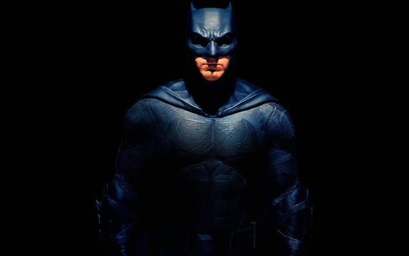
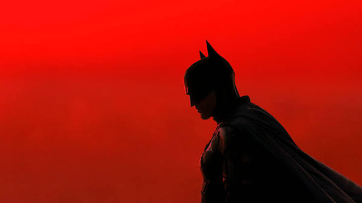
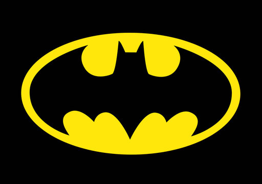

Quem deu a Bruce Wayne o direito de julgar?
Bruce Wayne é bilionario e herdeiro de uma das empresas mais poderosas de Gotham City.
A noite ele veste uma máscara e decide sozinho quem é culpado e quem merece punição. Ninguém pediu isso a ele: Bruce simplesmente se deu o direito de fazer justiça cpm as próprias mãos.
ASS: Coringa